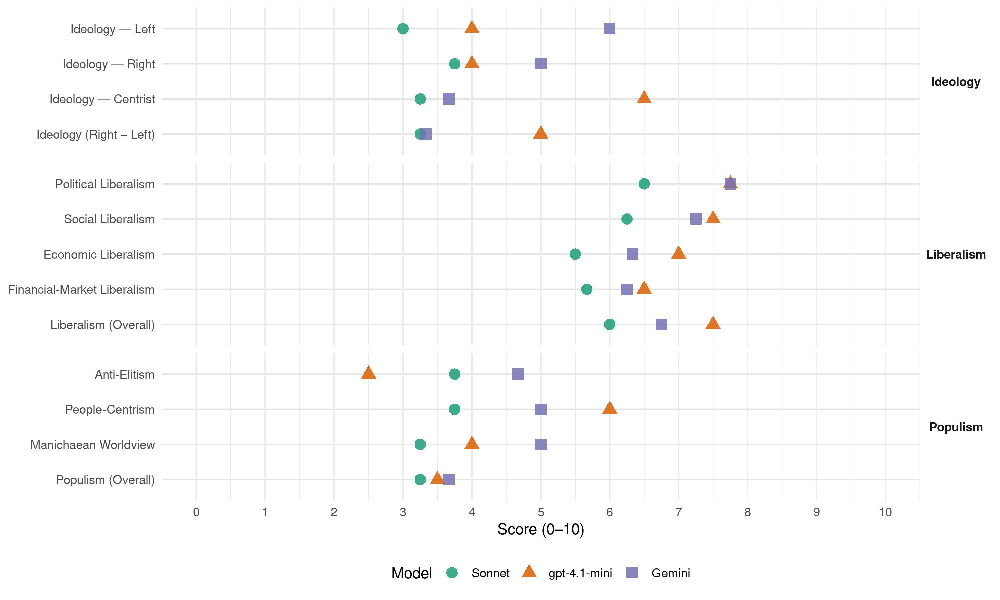

CD&V (Belgium, 2007)
manifesto_id 21521_200706
Get full text: This site shows derived annotations and short verbatim quotes only. The full manifesto text is © Manifesto Project / WZB — obtain it via manifesto-project.wzb.eu using the manifesto_id above.
Headline scores
| Dimension | Sonnet | gpt-4.1-mini | Gemini |
|---|---|---|---|
| Populism (Overall) | 3.2 | 3.5 | 3.7 |
| Anti-Elitism | 3.8 | 2.5 | 4.7 |
| People-Centrism | 3.8 | 6.0 | 5.0 |
| Manichaean Worldview | 3.2 | 4.0 | 5.0 |
| Ideology (Right − Left) | 3.2 | 5.0 | 3.3 |
| Liberalism (Overall) | 6.0 | 7.5 | 6.8 |
| Political Liberalism | 6.5 | 7.8 | 7.8 |
| Social Liberalism | 6.2 | 7.5 | 7.2 |
| Economic Liberalism | 5.5 | 7.0 | 6.3 |
| Financial-Market Liberalism | 5.7 | 6.5 | 6.2 |
Evidence per dimension
Economic Liberalism
Gemini · score 6.0 · verified · chunk 1
“wij moeten de sociale markteconomie verder uitbouwen”
Wij willen opnieuw rechtvaardigheid. Wij willen een maatschappij die normen en waarden niet onder de mat veegt. Die een rechtvaardige en correcte inning van de belastingen organiseert. Die zich niet systematisch bezondigt aan politieke benoemingen. Wij willen een maatschappij waarin goed en degelijk besturen de regel is en niet de uitzondering. Met een begrotingsbeleid dat geen onredelijke last op toekomstige generaties legt maar de middelen verstandig beheert en investeert in de toekomst. Met een overheid die opnieuw geloofwaardig is en daadwerkelijk garant staat voor haar essentiële opdrachten. Met een overheid die zelf het goede voorbeeld geeft als werkgever, als energiegebruiker, als opleider van mensen. Met een beleid dat vertrouwen en verantwoordelijkheid hand in hand doet gaan, voor de mensen en ondernemingen maar ook voor de verschillende overheden in dit land. Wij moeten de sociale markteconomie, het zogenaamde Rijnlandmodel, verder uitbouwen
Gemini · score 7.0 · verified · chunk 2
“vrijmaking van de dienstenmarkt”
tussen sociale bekommernissen en de zorg om economische efficiëntie en de vrijmaking van de dienstenmarkt. Het komt er nu
Gemini · score 6.0 · verified · chunk 3
“prioritair de marktwerking in de elektriciteitssector te bevorderen”
CD&V wenst prioritair de marktwerking in de elektriciteitssector te bevorderen om zo
Gemini · score 5.0 · mixed · chunk 4
“eerlijke handel in plaats van een ongelimiteerde vrijhandel”
pleiten we voor een eerlijke handel in plaats van een ongelimiteerde vrijhandel. Steun aan lokale boeren
gpt-4.1-mini · score 6.0 · verified · chunk 1
“Wij moeten de sociale markteconomie, het zogenaamde Rijnlandmodel, verder uitbouwen”
Wij moeten de sociale markteconomie, het zogenaamde Rijnlandmodel, verder uitbouwen Het economische en sociale moet nieuwe en betere evenwichten zoeken met het familiale, het ecologische, met menselijkheid in het algemeen.
gpt-4.1-mini · score 7.0 · verified · chunk 2
“CD&V wil een economisch groeipotentieel van 2,5% benaderen”
…Wij willen als christen-democraten ons Rijnlandmodel economisch, sociaal, familiaal en ecologisch versterken en een gezonde groei verzekeren waarbij welvaart en geluk samen gaan. Door ondernemen te stimuleren, investeringen aan te trekken, een KMO-vriendelijk beleid te voeren en innovatie en vorming te steunen zodat onze bedrijven zich concurrentieel kunnen handhaven in een geïnternationaliseerde en geglobaliseerde wereldhandel. CD&V wil een economisch groeipotentieel van 2,5% benaderen, waar dit nu minder dan 2% is.
gpt-4.1-mini · score 8.0 · verified · chunk 3
“marktwerking in de elektriciteitssector te bevorderen”
CD&V wil prioritair de marktwerking in de elektriciteitssector te bevorderen om zo voor de verbruikers tot lagere prijzen te komen. Daarom is het wenselijk dat de dominante marktspeler een tranche van de nucleaire activa afstaat aan andere marktspelers. Lukt dit niet, dan wil CD&V de aanstelling van een onafhankelijke groothandelaar voor de nucleaire productie en productie van steenkoolcentrales onderzoeken.
gpt-4.1-mini · score 7.0 · verified · chunk 4
“eerlijke handel in plaats van een ongelimiteerde vrijhandel”
Vanuit het belang van landbouw voor de voedselzekerheid pleiten we voor een aparte plaats voor landbouw binnen het WTO-verhaal, we pleiten voor een eerlijke handel in plaats van een ongelimiteerde vrijhandel. Steun aan lokale boeren, ontwikkeling van export en landbouwonderzoek moet het platteland helpen ontwikkelen.
Sonnet · score 5.0 · verified · chunk 1
“sociale markteconomie, het zogenaamde Rijnlandmodel”
Wij moeten de sociale markteconomie, het zogenaamde Rijnlandmodel, verder uitbouwen. Het economische en sociale moet nieuwe en betere evenwichten zoeken met het familiale, het ecologische.
Sonnet · score 6.0 · verified · chunk 2
“ondernemen en risico nemen meer gewaardeerd”
In het algemeen moet ondernemen en risico nemen - zoals werken - meer gewaardeerd worden. Dit vraagt een ondernemersvriendelijk kader.
Sonnet · score 6.0 · mixed · chunk 3
“marktwerking in de elektriciteitssector te bevorderen”
CD&V wenst prioritair de marktwerking in de elektriciteitssector te bevorderen om zo voor de verbruikers tot lagere prijzen te komen.
Sonnet · score 5.0 · mixed · chunk 4
“eerlijke handel in plaats van een ongelimiteerde vrijhandel”
pleiten we voor een eerlijke handel in plaats van een ongelimiteerde vrijhandel. Steun aan lokale boeren, ontwikkeling van export
Financial-Market Liberalism
Gemini · score 5.0 · verified · chunk 1
“volledig beeld krijgen van de kosten verbonden aan een krediet”
Agressieve marketing technieken die specifiek gericht zijn op kinderen moeten beter gereglementeerd worden. Op het vlak van financiële dienstverlening moet de klant steeds een volledig beeld krijgen van de kosten verbonden aan een krediet of van de opbrengst van een spaarrekening. Bij hypothecair krediet betekent dat o.a. dat ook de kosten van de verplichte nevenproducten worden meegerekend. Dit laat toe het aanbod van financiële instellingen op een objectieve manier met elkaar te vergelijken.
Gemini · score 6.0 · verified · chunk 2
“verhoging van de aftrek voor risicokapitaal”
bedrijfsresultaten. Voor KMO’s bepleiten we een verhoging van de aftrek voor risicokapitaal. Met deze maatregel willen we
Gemini · score 7.0 · verified · chunk 3
“ondersteunt, ook fiscaal, de aanvullende pensioenvorming”
rusthuis helpen financieren. CD&V ondersteunt, ook fiscaal, de aanvullende pensioenvorming in de
Gemini · score 7.0 · verified · chunk 4
“microfinanciering als instrument tegen armoede”
Daarom streeft CD&V naar ‘pro poor growth’. CD&V wil microfinanciering als instrument tegen armoede veel meer inzetten.
gpt-4.1-mini · score 6.0 · verified · chunk 1
“Op het vlak van financiële dienstverlening moet de klant steeds een volledig beeld krijgen van de kosten verbonden aan een krediet”
Op het vlak van financiële dienstverlening moet de klant steeds een volledig beeld krijgen van de kosten verbonden aan een krediet of van de opbrengst van een spaarrekening. Bij hypothecair krediet betekent dat o.a. dat ook de kosten van de verplichte nevenproducten worden meegerekend.
gpt-4.1-mini · score 6.0 · verified · chunk 2
“CD&V wil dat de overheid de openbare dienstverlening door overheidsbedrijven correct vergoedt”
…De overheid moet de openbare dienstverlening door overheidsbedrijven correct vergoeden. Politisering van het bestuur is onaanvaardbaar, net als het inschakelen van overheidsbedrijven om de begroting te manipuleren (overname pensioenfondsen, NMBS-schuld, …) of het gebruik ervan als machines voor jobcreatie. De overheid moet – al dan niet via (sector)compensatiefondsen – instaan voor een correcte vergoeding van de prestaties en diensten van openbaar nut, ook als deze worden aangeboden door een overheidsbedrijf.
gpt-4.1-mini · score 7.0 · verified · chunk 3
“belastingvermindering toekennen aan mensen die aandelen kopen van ontwikkelingsfondsen”
CD&V wil microfinanciering als instrument tegen armoede veel meer inzetten. En om meer middelen te mobiliseren willen we een belastingvermindering toekennen aan mensen die aandelen kopen van ontwikkelingsfondsen voor microfinanciering. We willen maatschappelijk verantwoord ondernemen in het Zuiden stimuleren door middel van een ethische code, met respect voor sociale en milieunormen.
gpt-4.1-mini · score 7.0 · verified · chunk 4
“microfinanciering als instrument tegen armoede veel meer inzetten”
Daarom streeft CD&V naar ‘pro poor growth’. CD&V wil microfinanciering als instrument tegen armoede veel meer inzetten. En om meer middelen te mobiliseren willen we een belastingvermindering toekennen aan mensen die aandelen kopen van ontwikkelingsfondsen voor microfinanciering.
Sonnet · score 6.0 · verified · chunk 1
“volledig beeld krijgen van de kosten verbonden aan een krediet”
Op het vlak van financiële dienstverlening moet de klant steeds een volledig beeld krijgen van de kosten verbonden aan een krediet of van de opbrengst van een spaarrekening.
Sonnet · score 6.0 · verified · chunk 2
“aftrek voor risicokapitaal”
Voor KMO’s bepleiten we een verhoging van de aftrek voor risicokapitaal. Met deze maatregel willen we de financiering met eigen vermogen, en dus de financiële gezondheid van de bedrijven, bevorderen.
Sonnet · score 5.0 · mixed · chunk 3
“private pijlers zijn per definitie ongelijker”
de private pijlers zijn per definitie ongelijker. Publieke middelen moeten voor CD&V bij voorrang dienen om het wettelijk stelsel te ondersteunen.
Sonnet · score 5.0 · verified · chunk 4
“microfinanciering als instrument tegen armoede”
CD&V wil microfinanciering als instrument tegen armoede veel meer inzetten. En om meer middelen te mobiliseren willen we een belastingvermindering
Political Liberalism
Gemini · score 7.0 · verified · chunk 1
“de fundamenten van de rechtsstaat moeten hersteld worden”
Met kansen voor wie wil en durft te ondernemen. Wij willen een samenleving die zorgzaam omgaat met al haar leden, ook de kwetsbaren; die armoede aanpakt, die er voor zorgt dat mensen een betaalbare woning vinden. Wij kiezen voor een gezonde groei en bouwen aan een toekomst waarin economische vooruitgang mogelijk blijft zonder daarom de toekomst van onze kinderen in het gedrang te brengen. Een toekomst die werk verschaft maar die op een duurzame wijze omspringt met de omgeving en de mensen. Dit door verstandig en zorgzaam omgaan met grondstoffen en energie. Door vervuiling aan te pakken. Door milieubewust gedrag en verantwoordelijk om gaan met onze leefomgeving aan te moedigen. Wij willen veiligheid voor iedereen. De fundamenten van de rechtsstaat moeten hersteld worden. Wij willen een maatschappij die mensen helpt en weerbaar maakt tegen verslaving en die weer respect en waardering uitstraalt voor mensen die verantwoordelijkheid opnemen jegens anderen.
Gemini · score 8.0 · verified · chunk 2
“vrijheid van godsdienst en levensbeschouwing”
CD&V is bij uitstek de verdediger van de vrijheid van godsdienst en levensbeschouwing. Dat beperkt zich niet tot
Gemini · score 8.0 · verified · chunk 3
“controle- en beslissingsfunctie van het Parlement tegenover”
om de controle- en beslissingsfunctie van het Parlement tegenover de regering te
Gemini · score 8.0 · verified · chunk 4
“versteviging van de democratie”
leggen op versteviging van de democratie, de werking van de overheidsinstellingen
gpt-4.1-mini · score 7.0 · verified · chunk 1
“De fundamenten van de rechtsstaat moeten hersteld worden. Wij willen een maatschappij die normen en waarden niet onder de mat veegt”
Wij willen veiligheid voor iedereen. De fundamenten van de rechtsstaat moeten hersteld worden. Wij willen een maatschappij die mensen helpt en weerbaar maakt tegen verslaving en die weer respect en waardering uitstraalt voor mensen die verantwoordelijkheid opnemen jegens anderen. Die eist dat straffen ook effectief worden uitgevoerd en die de regels voor iedereen op een gelijke manier toepast.
gpt-4.1-mini · score 8.0 · verified · chunk 2
“De Justitiebarometer van 2002 had 56% van de Belgen geen vertrouwen in Justitie”
…Justitie moeten opnieuw moed krijgen als ze zien dat het een overheid menens is met een goede organisatie van hun werk en hun werkomstandigheden. Volgens de Justitiebarometer van 2002 had 56% van de Belgen geen vertrouwen in Justitie. De oorzaken verrassen niet: gebrek aan informatie, te moeilijke woordenschat, traagheid en achterstand, gebrekkige en onvolledige uitvoering van straffen enz…
gpt-4.1-mini · score 8.0 · verified · chunk 3
“eerlijk en betrouwbaar bestuur, met respect voor de mensen”
Wij willen als christen-democraten de overheid opnieuw de plaats en het vertrouwen geven die ze verdient. Door correct en zorgzaam om te springen met het geld van de mensen door de financiën van de overheid opnieuw op orde te zetten. Door kerntaken van de overheid opnieuw te verzekeren, zoals de correcte inning van belastingen en een behoorlijke werking van Justitie en Politie. Door werk te maken van betere regels en een efficiëntere, klantgerichte administratie. Door meer Vlaanderen dankzij een versterking van de deelstaten, met meer bevoegdheden en verantwoordelijkheden. Door ons niet terug te plooien op onszelf, maar Europees en internationaal te denken en te handelen, ook bij de aanpak van armoede in de wereld. CD&V wil een overheid die het vertrouwen van de mensen, de ondernemingen en de beoefenaars van het vrije beroep waard is.
gpt-4.1-mini · score 8.0 · verified · chunk 4
“versterking van de democratie, de werking van de overheidsinstellingen, het respect voor de mensenrechten”
Inzake Congo wil CD&V de nadruk leggen op versteviging van de democratie, de werking van de overheidsinstellingen, het respect voor de mensenrechten, het aanwenden van de opbrengst van de bodemrijkdommen voor de Congolezen zelf en het bestrijden van corruptie.
Sonnet · score 6.0 · verified · chunk 1
“De fundamenten van de rechtsstaat moeten hersteld worden”
Wij willen veiligheid voor iedereen. De fundamenten van de rechtsstaat moeten hersteld worden. Wij willen een maatschappij die mensen helpt en weerbaar maakt tegen verslaving.
Sonnet · score 6.0 · verified · chunk 2
“sterke en onafhankelijke regulatoren”
Wettelijke verplichtingen moeten door alle spelers, overheid en privé, nageleefd worden. Dit vereist sterke en onafhankelijke regulatoren.
Sonnet · score 7.0 · verified · chunk 3
“controle- en beslissingsfunctie van het Parlement”
Om de controle- en beslissingsfunctie van het Parlement tegenover de regering te versterken moeten beleidsnota’s van Ministers
Sonnet · score 7.0 · verified · chunk 4
“versteviging van de democratie”
Inzake Congo wil CD&V de nadruk leggen op versteviging van de democratie, de werking van de overheidsinstellingen, het respect voor de mensenrechten
Liberalism (Overall)
Gemini · score 6.0 · verified · chunk 1
“de fundamenten van de rechtsstaat moeten hersteld worden”
Met kansen voor wie wil en durft te ondernemen. Wij willen een samenleving die zorgzaam omgaat met al haar leden, ook de kwetsbaren; die armoede aanpakt, die er voor zorgt dat mensen een betaalbare woning vinden. Wij kiezen voor een gezonde groei en bouwen aan een toekomst waarin economische vooruitgang mogelijk blijft zonder daarom de toekomst van onze kinderen in het gedrang te brengen. Een toekomst die werk verschaft maar die op een duurzame wijze omspringt met de omgeving en de mensen. Dit door verstandig en zorgzaam omgaan met grondstoffen en energie. Door vervuiling aan te pakken. Door milieubewust gedrag en verantwoordelijk om gaan met onze leefomgeving aan te moedigen. Wij willen veiligheid voor iedereen. De fundamenten van de rechtsstaat moeten hersteld worden. Wij willen een maatschappij die mensen helpt en weerbaar maakt tegen verslaving en die weer respect en waardering uitstraalt voor mensen die verantwoordelijkheid opnemen jegens anderen.
Gemini · score 7.0 · verified · chunk 2
“vrijmaking van de dienstenmarkt”
tussen sociale bekommernissen en de zorg om economische efficiëntie en de vrijmaking van de dienstenmarkt. Het komt er nu
Gemini · score 7.0 · verified · chunk 3
“controle- en beslissingsfunctie van het Parlement tegenover”
om de controle- en beslissingsfunctie van het Parlement tegenover de regering te
Gemini · score 7.0 · verified · chunk 4
“versteviging van de democratie”
leggen op versteviging van de democratie, de werking van de overheidsinstellingen
gpt-4.1-mini · score 7.0 · verified · chunk 1
“De fundamenten van de rechtsstaat moeten hersteld worden. Gezondheidszorg is een basisrecht voor elke mens”
Wij willen veiligheid voor iedereen. De fundamenten van de rechtsstaat moeten hersteld worden. Gezondheidszorg is een basisrecht voor elke mens. Er moet dus voldoende aanbod zijn van goede en betaalbare zorg.
gpt-4.1-mini · score 7.0 · verified · chunk 2
“CD&V wil een economisch groeipotentieel van 2,5% benaderen”
…Wij willen als christen-democraten ons Rijnlandmodel economisch, sociaal, familiaal en ecologisch versterken en een gezonde groei verzekeren waarbij welvaart en geluk samen gaan. Door ondernemen te stimuleren, investeringen aan te trekken, een KMO-vriendelijk beleid te voeren en innovatie en vorming te steunen zodat onze bedrijven zich concurrentieel kunnen handhaven in een geïnternationaliseerde en geglobaliseerde wereldhandel. CD&V wil een economisch groeipotentieel van 2,5% benaderen, waar dit nu minder dan 2% is.
gpt-4.1-mini · score 8.0 · verified · chunk 3
“eerlijk en betrouwbaar bestuur, met respect voor de mensen”
Wij willen als christen-democraten de overheid opnieuw de plaats en het vertrouwen geven die ze verdient. Door correct en zorgzaam om te springen met het geld van de mensen door de financiën van de overheid opnieuw op orde te zetten. Door kerntaken van de overheid opnieuw te verzekeren, zoals de correcte inning van belastingen en een behoorlijke werking van Justitie en Politie. Door werk te maken van betere regels en een efficiëntere, klantgerichte administratie. Door meer Vlaanderen dankzij een versterking van de deelstaten, met meer bevoegdheden en verantwoordelijkheden. Door ons niet terug te plooien op onszelf, maar Europees en internationaal te denken en te handelen, ook bij de aanpak van armoede in de wereld. CD&V wil een overheid die het vertrouwen van de mensen, de ondernemingen en de beoefenaars van het vrije beroep waard is.
gpt-4.1-mini · score 8.0 · verified · chunk 4
“versterking van de democratie, de werking van de overheidsinstellingen, het respect voor de mensenrechten”
Inzake Congo wil CD&V de nadruk leggen op versteviging van de democratie, de werking van de overheidsinstellingen, het respect voor de mensenrechten, het aanwenden van de opbrengst van de bodemrijkdommen voor de Congolezen zelf en het bestrijden van corruptie.
Sonnet · score 6.0 · verified · chunk 1
“rechtsstaat die moet garanderen dat de overheid”
De rechtsstaat die moet garanderen dat de overheid en de mensen de regels naleven, verdrinkt in slechte wetgeving, vuilbakwetten en onuitvoerbare wetten.
Sonnet · score 6.0 · verified · chunk 2
“ondernemersvriendelijk kader”
In het algemeen moet ondernemen en risico nemen - zoals werken - meer gewaardeerd worden. Dit vraagt een ondernemersvriendelijk kader.
Sonnet · score 6.0 · verified · chunk 3
“Mensenrechten, democratie en rechtsstaat moeten gewaarborgd worden”
CD&V gelooft in Europa als waardengemeenschap. Mensenrechten, democratie en rechtsstaat moeten gewaarborgd worden.
Sonnet · score 6.0 · verified · chunk 4
“versteviging van de democratie”
Inzake Congo wil CD&V de nadruk leggen op versteviging van de democratie, de werking van de overheidsinstellingen, het respect voor de mensenrechten
Anti-Elitism
Gemini · score 7.0 · verified · chunk 1
“modelstaat gaat net als zijn Paarse leiders ten onder aan ongeloofwaardigheid”
na 150 miljoen euro investeringen. Defensie krijgt de personeelsafslanking niet rond en lijdt door zijn Minister voortdurende imagoschade. De modelstaat gaat net als zijn Paarse leiders ten onder aan ongeloofwaardigheid. Ik of Wij….. dat is de vraag die we de mensen bij deze Federale verkiezingen voorleggen.
Gemini · score 4.0 · verified · chunk 2
“de dramatische Justitiebalans van Paars”
verbetering weinig aannemelijk gelet op de dramatische Justitiebalans van Paars: de aanslepende achterstand
Gemini · score 3.0 · verified · chunk 3
“politieke beïnvloeding tijdens de selectieprocedure mag niet”
functieprofiel. Politieke beïnvloeding tijdens de selectieprocedure mag niet. Zowel interne
gpt-4.1-mini · score 3.0 · verified · chunk 1
“De Paarse en Paarsgroene partijen hadden de mond vol over de grote problemen”
De Paarse en Paarsgroene partijen hadden de mond vol over de grote problemen, over de klimaatverandering, over de essentiële evoluties van onze maatschappij maar zij blijven steken in een weinig fundamentele aanpak.
gpt-4.1-mini · score 2.0 · verified · chunk 2
“De wet die dient om de zwakkere te beschermen wordt aldus een wet die in realiteit de sterkste beschermt”
…juridisering” van de samenleving is niet wenselijk want het gaat samen met de onrealistische verwachting dat Justitie alles kan en moet oplossen. Met nieuwe teleurstellingen tot gevolg. Slechte, complexe en te veel regelgeving versterkt de juridische kloof. Het gevoel van onrechtvaardigheid en machteloosheid groeit bij de grote groep mensen die niet meer kan volgen versus de kleine groep die zich laat bijstaan door allerlei specialisten om de regels te doorgronden en naar hun hand te zetten. De wet die dient om de zwakkere te beschermen wordt aldus een wet die in realiteit de sterkste beschermt. De groeiende impact van Europese en internationale regelgeving en rechtspraak maakt het er niet gemakkelijker op.
Sonnet · score 6.0 · verified · chunk 1
“De Paarse en Paarsgroene partijen hadden de mond vol”
Na zeven jaar presteert men het om met veel poeha een opsomming te maken van alle noodzakelijke hervormingen, en zwijgt men zedig over alle gemiste kansen, alle onvervulde beloften en een overheid die slechter werkt dan ooit voorheen.
Sonnet · score 3.0 · verified · chunk 2
“de acht verloren jaren op Justitie onder Paars”
Na de analyse, studie en audit, na de acht verloren jaren op Justitie onder Paars, na het steeds maar weer blootleggen van de pijnpunten
Sonnet · score 3.0 · verified · chunk 3
“Paars draaide de Octopusklok terug”
CD&V verwijt de paarse regering terugdraaien van hervormingen: Paars draaide de Octopusklok terug door invoering van een pro forma evaluatie examen
Sonnet · score 3.0 · verified · chunk 4
“begrotingstrucs toe”
geen ontwikkelingshulp zijn en men past allerlei begrotingstrucs toe. Een inhaaloperatie zal nodig zijn
Ideology — Centrist
Gemini · score 4.0 · verified · chunk 1
“niet boven de hoofden van de mensen maar voor en door de mensen”
Dit vereist een kwaliteitsvolle werking van het overheidsapparaat en een gezonde begroting. Dit vereist goed bestuur. Dit beleid steunt voor ons op een programma dat niet boven de hoofden van de mensen maar voor en door de mensen is opgesteld. Wat houdt hen bezig? Wat zijn hun zorgen? Wat willen ze zien veranderen?
Gemini · score 4.0 · verified · chunk 2
“zo gelooft in de kracht van “wij””
vrijwilligerswerk, de sportclub, de werkplek. Daarom dat CD&V zo gelooft in de kracht van “wij”. In Vlaanderen groeit
Gemini · score 3.0 · verified · chunk 3
“overheid ten dienste staan van de mensen”
overheid moet immers ten dienste staan van de mensen, luisterbereid zijn
gpt-4.1-mini · score 6.0 · verified · chunk 1
“Wij gaan niet voor een wereld van mensen naast, ja zelfs tegen elkaar. Wij zetten ons af tegen de keuze van Paars”
Ik of Wij….. dat is de vraag die we de mensen bij deze Federale verkiezingen voorleggen. Dit verkiezingsprogramma is niet zomaar een lijstje van kritieken en voorstellen. Het is geschreven vanuit een christen-democratische visie op de mensen, de samenleving en hun uitdagingen van morgen. Wij hebben een ander uitgangspunt dan de Paarse partijen. Wij gaan niet voor een wereld van mensen naast, ja zelfs tegen elkaar. Wij zetten ons af tegen de keuze van Paars en Paarsgroen om het individualisme te versterken.
gpt-4.1-mini · score 7.0 · verified · chunk 2
“CD&V gelooft in de kracht van “wij””
…mensen die zich actief inzetten voor elkaar voelen zich daar goed bij, het maakt hen sterker en geeft meer vertrouwen: in het gezin, de buurtwerking, ontmoetingsplaatsen, jeugdhuizen, het vrijwilligerswerk, de sportclub, de werkplek. Daarom dat CD&V zo gelooft in de kracht van “wij”. In Vlaanderen groeit en bloeit het verenigingsleven in oude, nieuwe en vernieuwende vormen, groot- en kleinschalig, georganiseerd en spontaan.
Sonnet · score 4.0 · verified · chunk 1
“Een antwoord geven op de échte vragen van de mensen”
Wat vooral ontbreekt is een maatschappijvisie. Een overtuiging over hoe onze maatschappij er moet uitzien. Een antwoord geven op de échte vragen van de mensen.
Sonnet · score 3.0 · verified · chunk 2
“christen-democraten dit sociaal weefsel”
Wij willen als christen-democraten dit sociaal weefsel tussen mensen steunen en versterken.
Sonnet · score 3.0 · verified · chunk 3
“Het belang van zes miljoen Vlamingen”
Het belang van zes miljoen Vlamingen, dat is het belang van CD&V.
Sonnet · score 3.0 · verified · chunk 4
“een eerlijke handel in plaats van een ongelimiteerde vrijhandel”
pleiten we voor een eerlijke handel in plaats van een ongelimiteerde vrijhandel. Steun aan lokale boeren
Ideology — Left
Gemini · score 6.0 · verified · chunk 1
“het armoederisico neemt de jongste jaren weer toe”
Toenemende vereenzaming, stress, depressies en zelfmoord geven aan dat we hier hard aan moeten werken en dat het individualisme zijn grenzen heeft bereikt. Het staat het zoeken en vinden van geluk in de weg. Maar het leidt ook tot een voortdurend korte-termijndenken: naar de volgende verkiezing, naar de beurskoers van morgen, naar het eigen profijt nu, los van de anderen. Om een generatieconflict te vermijden moet de arbeid van de actieven ge”waard”eerd worden, van jong en oud. De sociale zekerheid moet nu veilig gesteld worden voor de toekomstige generaties. Het klimaatprobleem vraagt vandaag fundamentele keuzes voor de leefbaarheid morgen. De integratie of vreemdelingen kent nog vele problemen. De zeer zwakke scholings- en werkgelegenheidsgraad, de hoge werkloosheidsgraad, het grote armoederisico en de veiligheidsproblemen blijven zorgwekkend. Maar ook het verhaal van rechten en plichten dringt nog te weinig door. Het armoederisico neemt de jongste jaren weer toe vooral bij die groepen die familiaal zwak staan.
gpt-4.1-mini · score 4.0 · verified · chunk 1
“Het armoederisico is toegenomen. Van de kopgroep is België weggezakt naar de middenmoot”
Paars was er nooit voor iedereen. Het armoederisico is toegenomen. Van de kopgroep is België weggezakt naar de middenmoot van de Europese landen. Meer groepen, waaronder de gepensioneerden en alleenstaanden met kinderen lopen een groter armoederisico.
gpt-4.1-mini · score 4.0 · verified · chunk 2
“CD&V wil een beleid dat bijdraagt tot de sociale cohesie door versterking van gezinnen, straat- en buurtwerking”
…veiligheid heeft vaak ook te maken met een gebrek aan respect voor elkaar, voor regels. Daarom wil CD&V een beleid dat bijdraagt tot de sociale cohesie door versterking van gezinnen, straat- en buurtwerking, de lokale middenstand en ondernemingen, het middenveld, de verenigingen enz. Zij zorgen mee voor de overdracht van gedragsregels en het toezicht erop.
Sonnet · score 3.0 · verified · chunk 1
“solidariteit in de sociale zekerheid opnieuw versterken”
CD&V wil de solidariteit in de sociale zekerheid opnieuw versterken door welvaartsvaste sociale uitkeringen, zoals kinderbijslagen en pensioenen.
Sonnet · score 3.0 · verified · chunk 2
“sociale bescherming in België afkalft”
Recent onderzoek toont aan dat de sociale bescherming in België afkalft. Van een absoluut topland zijn we geleidelijk aan weggezakt naar de staart van het koppeloton.
Sonnet · score 2.0 · verified · chunk 3
“solidariteit ook het verzekeringsprincipe een essentieel onderdeel”
Voor CD&V vormt naast solidariteit ook het verzekeringsprincipe een essentieel onderdeel van de sociale bescherming.
Sonnet · score 4.0 · verified · chunk 4
“pro poor growth”
economische groei moet duurzaam zijn en vooral ten goede komen aan de armen. Daarom streeft CD&V naar ‘pro poor growth’
Ideology (Right − Left)
Gemini · score 5.0 · verified · chunk 1
“modelstaat gaat net als zijn Paarse leiders ten onder aan ongeloofwaardigheid”
na 150 miljoen euro investeringen. Defensie krijgt de personeelsafslanking niet rond en lijdt door zijn Minister voortdurende imagoschade. De modelstaat gaat net als zijn Paarse leiders ten onder aan ongeloofwaardigheid. Ik of Wij….. dat is de vraag die we de mensen bij deze Federale verkiezingen voorlegen.
Gemini · score 3.0 · verified · chunk 2
“zo gelooft in de kracht van “wij””
vrijwilligerswerk, de sportclub, de werkplek. Daarom dat CD&V zo gelooft in de kracht van “wij”. In Vlaanderen groeit
Gemini · score 2.0 · verified · chunk 3
“overheid ten dienste staan van de mensen”
overheid moet immers ten dienste staan van de mensen, luisterbereid zijn
gpt-4.1-mini · score 5.0 · verified · chunk 1
“Paars was er nooit voor iedereen. Het armoederisico is toegenomen. Van de kopgroep is België weggezakt”
Paars was er nooit voor iedereen. Het armoederisico is toegenomen. Van de kopgroep is België weggezakt naar de middenmoot van de Europese landen. Meer groepen, waaronder de gepensioneerden en alleenstaanden met kinderen lopen een groter armoederisico.
gpt-4.1-mini · score 5.0 · verified · chunk 2
“De wet die dient om de zwakkere te beschermen wordt aldus een wet die in realiteit de sterkste beschermt”
…juridisering” van de samenleving is niet wenselijk want het gaat samen met de onrealistische verwachting dat Justitie alles kan en moet oplossen. Met nieuwe teleurstellingen tot gevolg. Slechte, complexe en te veel regelgeving versterkt de juridische kloof. Het gevoel van onrechtvaardigheid en machteloosheid groeit bij de grote groep mensen die niet meer kan volgen versus de kleine groep die zich laat bijstaan door allerlei specialisten om de regels te doorgronden en naar hun hand te zetten. De wet die dient om de zwakkere te beschermen wordt aldus een wet die in realiteit de sterkste beschermt. De groeiende impact van Europese en internationale regelgeving en rechtspraak maakt het er niet gemakkelijker op.
Sonnet · score 4.0 · verified · chunk 1
“christen-democratische visie op de mensen”
Het is geschreven vanuit een christen-democratische visie op de mensen, de samenleving en hun uitdagingen van morgen.
Sonnet · score 3.0 · verified · chunk 2
“Wij willen als christen-democraten”
Wij willen als christen-democraten ons Rijnlandmodel economisch, sociaal, familiaal en ecologisch versterken
Sonnet · score 3.0 · verified · chunk 3
“CD&V kiest voor een overwegend publieke eigendom”
CD&V kiest voor een overwegend publieke eigendom en een publiek beheer van de netten die van nature een monopolie vormen.
Sonnet · score 3.0 · verified · chunk 4
“pro poor growth”
economische groei moet duurzaam zijn en vooral ten goede komen aan de armen. Daarom streeft CD&V naar ‘pro poor growth’
Ideology — Right
Gemini · score 5.0 · verified · chunk 1
“immigranten kunnen Belg worden zonder onze taal te kennen”
Wie er alleen voor staat komt soms amper rond of kan enkel dromen van een eigen huis. Voor sommigen wordt het teveel: men haakt af, men vereenzaamt, men verzeilt in depressies of wordt chronisch vermoeid, men vlucht weg in verslavende middelen of een virtuele wereld, of, in extreme gevallen, maakt men er voor zichzelf of zijn gezinsleden een onverklaarbaar einde aan. Het samenleven met anderen is er in de voorbije acht jaar echt niet gemakkelijker op geworden. Immigranten kunnen Belg worden zonder onze taal te kennen. Gezinshereniging zonder inburgering versterkt de integratieachterstand van allochtonen.
gpt-4.1-mini · score 5.0 · verified · chunk 1
“Immigranten kunnen Belg worden zonder onze taal te kennen. Gezinshereniging zonder inburgering versterkt de integratieachterstand”
Immigranten kunnen Belg worden zonder onze taal te kennen. Gezinshereniging zonder inburgering versterkt de integratieachterstand van allochtonen. Vluchtelingen en hun gezinnen verzanden in ellenlange asielprocedures of verdwijnen vroeg of laat in de illegaliteit.
gpt-4.1-mini · score 3.0 · verified · chunk 2
“Migratie en het samenleven van diverse gemeenschappen brengt kansen maar ook moeilijkheden met zich mee”
…migratie en het samenleven van diverse gemeenschappen brengt kansen maar ook moeilijkheden met zich mee. CD&V gelooft niet in een beleid dat die moeilijkheden negeert. De problemen zien, en ze eerlijk, positief en met zoveel mogelijk mensen aanpakken is de enige duurzame oplossing.
Sonnet · score 5.0 · verified · chunk 1
“Immigranten kunnen Belg worden zonder onze taal te kennen”
Immigranten kunnen Belg worden zonder onze taal te kennen. Gezinshereniging zonder inburgering versterkt de integratieachterstand van allochtonen.
Sonnet · score 4.0 · verified · chunk 2
“integratiebereidheid is niet langer een voorwaarde”
Integratiebereidheid is sinds de Paarse snelBelgwet niet langer een voorwaarde om onze nationaliteit te bekomen.
Sonnet · score 4.0 · verified · chunk 3
“gezinshereniging niet langer zonder inburgering”
Zo kan gezinshereniging niet langer zonder inburgering. De Federale wetgever moet de voorwaarden voor gezinshereniging verder aanpassen
Sonnet · score 2.0 · verified · chunk 4
“identiteit van de Unie en de maatschappelijke aanvaardbaarheid”
de efficiëntie van de besluitvorming, de interne samenhang en de financiële draagkracht van de Unie, maar ook de identiteit van de Unie en de maatschappelijke aanvaardbaarheid ervan
Manichaean Worldview
Gemini · score 5.0 · verified · chunk 1
“cultuur van beloften, leugens en immobilisme”
De modelstaat die snel en efficiënt België aan de internationale top zou brengen, blijkt in realiteit te steunen op een cultuur van beloften (administratieve vereenvoudiging, modernisering Justitie), leugens (stookoliefactuur) en immobilisme (hervorming ambtenarij, klimaatproblematiek, staatshervorming, splitsing Brussel-Halle-Vilvoorde).
gpt-4.1-mini · score 4.0 · verified · chunk 1
“De modelstaat gaat net als zijn Paarse leiders ten onder aan ongeloofwaardigheid”
De modelstaat gaat net als zijn Paarse leiders ten onder aan ongeloofwaardigheid. Ik of Wij….. dat is de vraag die we de mensen bij deze Federale verkiezingen voorleggen.
Sonnet · score 5.0 · verified · chunk 1
“Er werd een modelstaat beloofd. We kregen een staat in ademnood”
Na zeven jaar presteert men het om met veel poeha een opsomming te maken van alle noodzakelijke hervormingen… Er werd een modelstaat beloofd. We kregen een staat in ademnood, die er niet meer in slaagt om zijn essentiële functies in te vullen.
Sonnet · score 3.0 · verified · chunk 2
“dramatische Justitiebalans van Paars”
lijkt verbetering weinig aannemelijk gelet op de dramatische Justitiebalans van Paars: de aanslepende achterstand, de nooit geziene overbevolking
Sonnet · score 3.0 · verified · chunk 3
“slecht bestuur van Paars”
Na het immobilisme inzake de staatshervorming en na het slecht bestuur van Paars, is het tijd voor een doorbraak.
Sonnet · score 2.0 · verified · chunk 4
“trein der traagheid en gebrek aan slagkracht”
werd het Paars-groene beleid gekenmerkt door de trein der traagheid en gebrek aan slagkracht. Ondanks nieuwe beloftes
People-Centrism
Gemini · score 6.0 · verified · chunk 1
“een antwoord geven op de échte vragen van de mensen”
Wat vooral ontbreekt is een maatschappijvisie. Een overtuiging over hoe onze maatschappij er moet uitzien. Weten wat moet gedaan worden en hoe men dat wil aanpakken. Een antwoord geven op de échte vragen van de mensen. Paars was er nooit voor iedereen. Het armoederisico is toegenomen.
Gemini · score 5.0 · verified · chunk 2
“zo gelooft in de kracht van “wij””
vrijwilligerswerk, de sportclub, de werkplek. Daarom dat CD&V zo gelooft in de kracht van “wij”. In Vlaanderen groeit
Gemini · score 4.0 · verified · chunk 3
“overheid opnieuw de plaats en het vertrouwen geven”
christen-democraten de overheid opnieuw de plaats en het vertrouwen geven die ze verdient
gpt-4.1-mini · score 6.0 · verified · chunk 1
“Wij kiezen voor elke ik, sterk en zwak. Een wereld waar “wij” meer telt dan “ik””
Wij kiezen voor elke ik, sterk en zwak. Een wereld waar “wij” meer telt dan “ik”. Een wereld waarin men elkaar respecteert, waarin mensen kiezen voor elkaar en waarin de overheid dit ondersteunt en versterkt: gezinnen, verenigingen, ondernemingen, vrij initiatief in onderwijs of gezondheidszorg, maar ook losse initiatieven van mensen die zich ergens voor inzetten.
gpt-4.1-mini · score 6.0 · verified · chunk 2
“CD&V gelooft in de kracht van “wij””
…mensen die zich actief inzetten voor elkaar voelen zich daar goed bij, het maakt hen sterker en geeft meer vertrouwen: in het gezin, de buurtwerking, ontmoetingsplaatsen, jeugdhuizen, het vrijwilligerswerk, de sportclub, de werkplek. Daarom dat CD&V zo gelooft in de kracht van “wij”. In Vlaanderen groeit en bloeit het verenigingsleven in oude, nieuwe en vernieuwende vormen, groot- en kleinschalig, georganiseerd en spontaan.
Sonnet · score 6.0 · verified · chunk 1
“voor en door de mensen is opgesteld”
Dit beleid steunt voor ons op een programma dat niet boven de hoofden van de mensen maar voor en door de mensen is opgesteld. Wat houdt hen bezig? Wat zijn hun zorgen?
Sonnet · score 4.0 · verified · chunk 2
“CD&V zo gelooft in de kracht van”wij”“
Mensen die zich actief inzetten voor elkaar voelen zich daar goed bij, het maakt hen sterker en geeft meer vertrouwen… Daarom dat CD&V zo gelooft in de kracht van “wij”.
Sonnet · score 3.0 · verified · chunk 3
“Mensen willen een overheid die ongeacht de politieke kleur”
Mensen willen een overheid die ongeacht de politieke kleur goed en geloofwaardig bestuurt.
Sonnet · score 2.0 · verified · chunk 4
“Omdat elke mens telt”
CD&V wil dit bestrijden. Omdat elke mens telt. En omdat ook Vlaanderen baat heeft bij welvaart
Populism (Overall)
Gemini · score 6.0 · verified · chunk 1
“modelstaat gaat net als zijn Paarse leiders ten onder aan ongeloofwaardigheid”
na 150 miljoen euro investeringen. Defensie krijgt de personeelsafslanking niet rond en lijdt door zijn Minister voortdurende imagoschade. De modelstaat gaat net als zijn Paarse leiders ten onder aan ongeloofwaardigheid. Ik of Wij….. dat is de vraag die we de mensen bij deze Federale verkiezingen voorleggen.
Gemini · score 3.0 · verified · chunk 2
“de dramatische Justitiebalans van Paars”
verbetering weinig aannemelijk gelet op de dramatische Justitiebalans van Paars: de aanslepende achterstand
Gemini · score 2.0 · verified · chunk 3
“politieke beïnvloeding tijdens de selectieprocedure mag niet”
functieprofiel. Politieke beïnvloeding tijdens de selectieprocedure mag niet. Zowel interne
gpt-4.1-mini · score 4.0 · verified · chunk 1
“De Paarse en Paarsgroene partijen hadden de mond vol over de grote problemen”
De Paarse en Paarsgroene partijen hadden de mond vol over de grote problemen, over de klimaatverandering, over de essentiële evoluties van onze maatschappij maar zij blijven steken in een weinig fundamentele aanpak.
gpt-4.1-mini · score 3.0 · verified · chunk 2
“De wet die dient om de zwakkere te beschermen wordt aldus een wet die in realiteit de sterkste beschermt”
…juridisering” van de samenleving is niet wenselijk want het gaat samen met de onrealistische verwachting dat Justitie alles kan en moet oplossen. Met nieuwe teleurstellingen tot gevolg. Slechte, complexe en te veel regelgeving versterkt de juridische kloof. Het gevoel van onrechtvaardigheid en machteloosheid groeit bij de grote groep mensen die niet meer kan volgen versus de kleine groep die zich laat bijstaan door allerlei specialisten om de regels te doorgronden en naar hun hand te zetten. De wet die dient om de zwakkere te beschermen wordt aldus een wet die in realiteit de sterkste beschermt. De groeiende impact van Europese en internationale regelgeving en rechtspraak maakt het er niet gemakkelijker op.
Sonnet · score 5.0 · verified · chunk 1
“Paars was er nooit voor iedereen”
Paars was er nooit voor iedereen. Het armoederisico is toegenomen. Van de kopgroep is België weggezakt naar de middenmoot van de Europese landen.
Sonnet · score 3.0 · verified · chunk 2
“de acht verloren jaren op Justitie onder Paars”
Na de analyse, studie en audit, na de acht verloren jaren op Justitie onder Paars, na het steeds maar weer blootleggen van de pijnpunten
Sonnet · score 3.0 · verified · chunk 3
“Paars bleef het bij losse flodders”
Onder Paars bleef het bij losse flodders: wetten werden niet afgeschaft omdat ze overbodig waren
Sonnet · score 2.0 · verified · chunk 4
“begrotingstrucs toe”
geen ontwikkelingshulp zijn en men past allerlei begrotingstrucs toe. Een inhaaloperatie zal nodig zijn
Social Liberalism